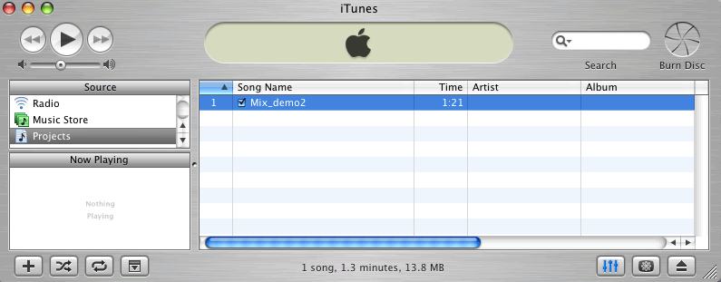
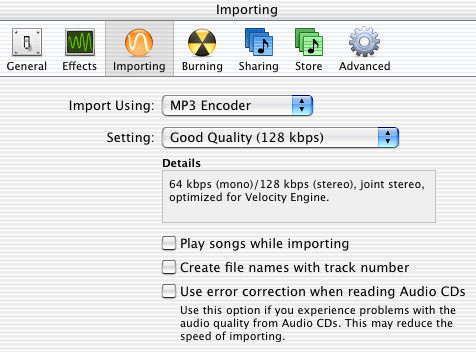
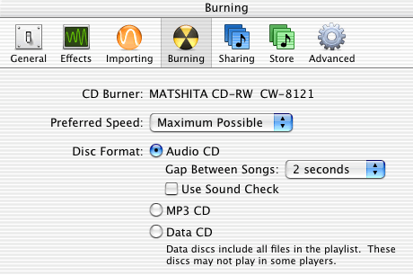
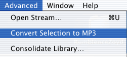
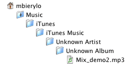

1. Start by opening iTunes and creating a new playlist. (File>New Playlist) Name the playlist "Projects."
2. Make your new playlist active, and drag any audio files you want to store in iTunes from the desktop into the Playlist window.

The iTunes window with your Projects playlist
3. Before we go further, let's set a couple of preferences. Open the iTunes Preferences in the File Menu. Choose the set of preferences for Importing. Setting these will also determine the format you'll use for converting AIFF audio files to MP3s. Set the preferences as shown below. Once again, a bitrate of 128 kbps will reduce file size by a 10:1 ratio.

MP3 bitrate settings
4. Switch to the Burning preferences and make sure the disk format is set to Audio CD as shown below.

Disk Format settings
5. There are two ways to make an Audio CD. In the File menu, choose Burn Playlist to Disk or click on the Burn Disk icon in iTunes. When prompted, insert a blank disk to begin writing to disk. You can burn an audio CD with up to 80 minutes of music from a Playlist in iTunes.
Converting to MP3
6. Select the song to be converted in the iTunes Window. Choose Convert Selection to MP3 in the Advanced Menu. The file will be converted using the bit rate you set in the Preferences Window.

A word about iTunes: Apple's system for organizing audio files in your computer depends on a set file structure for storing and cataloging those files. Every song in iTunes is stored in its own folder within the iTunes folder. The path for the MP3 file I just created in this example is shown below.

The path for storing files using iTunes
iTunes organizes songs by Artist and Album title, and it doesn't have this information for any files you create. So, you'll have to look for files you create by name.
7. In order to distribute the MP3 file you just created, you'll need to navigate to it using the Find command in the File Menu. When you've found the file, you can either drag it out of its folder, or make a copy of it using the Duplicate command. If you choose to remove it from the folder where it was stored, iTunes won't be able to find it. But, you needn't worry; a copy of the original was made when you first brought the file into iTunes.